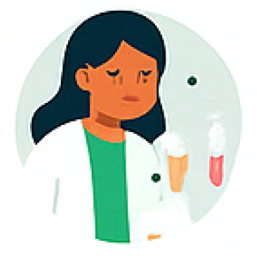

Hasil Analisis Rontgen Dada
Diagnosis Model:
Tingkat Keyakinan:
Ringkasan Hasil
Tindak Lanjut
Konsultasi dengan dokter untuk diagnosis lebih lanjut dan rencana perawatan.

Lakukan tes laboratorium tambahan (misalnya, tes dahak) sesuai anjuran dokter.